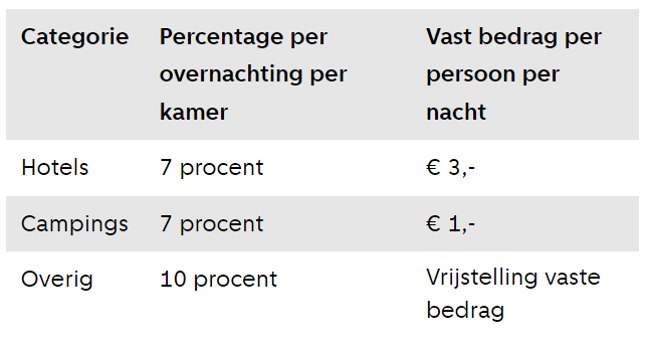

Assignment 3 - Housing
Amsterdam wants to get a bit of insight in the number of tourists that will make use of AirBnB. To give advice, we did the following calculations for Amsterdam:
1. What Amsterdam will receive from tourist tax if the event lasts a week, and you will have 30.000 visitors?
Around 12% of tourists visiting Amsterdam stay in an Airbnb accommodation (Ecorys, 2018). 10% of the turnover is being paid as tourist tax. The other tourists mainly stay at hotels. Hotels have to pay 7% of their turnover as tourist tax. Additionally, hotel guests pay €3 per person per night (City of Amsterdam, n.d.).
3.600 people are expected to stay in Airbnb accommodation. The average price of an Airbnb is €254 in Amsterdam. The average occupation would be around 3 people, resulting in 1200 apartments. This results in a tourist tax of €213.771. The other people are expected to stay at hotels, but could also stay at other accommodation, like staying with friend or at campsites. For the sake of the calculation, we estimate that 25.000 people will stay at hotels. Bringing in €525.000 in tourist tax directly. Indirectly, hotels pay 7%. The average hotel room price in the city is €189 a night (Het Parool, 2023). For around 12.500 hotel rooms being occupied for 7 nights, this would result in a tourist tax of €1.157.625

# Assignment 3.1
# What will Amsterdam receive from tourist tax?
# The event lasts a week with 30.000 visitors
import pandas as pd
# Airbnb tax
Airbnb_visitors = 30000 * 0.12 # 12% stays at Airbnb
Airbnb_appartments = Airbnb_visitors / 3 # based on average occupation of 3
bnb_data = pd.read_csv('listings.csv')
bnb_price = bnb_data['price'].mean()
print("The mean price of Airbnbs in Amsterdam is:", bnb_price)
Airbnb_tax = (bnb_price * Airbnb_appartments) * 0.1
Airbnb_tax_week = Airbnb_tax * 7
print(Airbnb_tax_week)
# Hotel direct tax
direct_tax = 25000 * 3
direct_tax_week = direct_tax * 7
print(direct_tax_week)
# Hotel indirect tax
average_price = 189 # average hotel price september 2023
hotel_rooms = 12500 # based on average occupation of 2
indirect_tax = (average_price * hotel_rooms) * 0.07
indirect_tax_week = indirect_tax * 7
print(indirect_tax_week)
# Total tourist tax
total_tax = Airbnb_tax_week + direct_tax_week + indirect_tax_week
print(total_tax, "euro")
2. Plot the amount of AirBnB locations per neighborhood
With 1382 listings, the neighborhood ‘De Baarsjes – Oud West’ has the most AirBnB locations of all the Amsterdam neighborhoods. The least number of listings, only 39, are found in ‘Bijlmer-Oost’.
# Assignment 3.2
import pandas as pd
import plotly.express as px
# Plot the amount of AirBnB locations per neighborhood
bnb_data = pd.read_csv('listings.csv')
neighbourhood = bnb_data['neighbourhood'].value_counts().reset_index()
neighbourhood.columns = ['neighbourhood', 'count']
print(neighbourhood)
fig = px.bar(neighbourhood, x='neighbourhood', y='count', title='number of AirBnB locations per neighbourhood in Amsterdam')
fig.update_xaxes(title='neighbourhood')
fig.update_yaxes(title='number of AirBnBs')
fig.show()
3. Which street in Amsterdam has to most AirBnB apartments?
By using the latitude and longitude of the AirBnB listings in Amsterdam, a geolocator could be used to find out in which street the most AirBnB listings are located. It turns out that Hagedoornplein in Amsterdam Noord is the street with the most Airbnb listings, with 12 AirBnB apartments.
# Assignment 3.3
# Which street in Amsterdam has the most AirBnB apartments?
from geopy.geocoders import Nominatim
import pandas as pd
import os.path
bnb_data = pd.read_csv('listings.csv')
location = bnb_data.groupby(['latitude', 'longitude']).size().reset_index(name='count')
geolocator = Nominatim(user_agent="airbnb_geocoder")
def get_street_from_location(lat, lon):
try:
location_info = geolocator.reverse((lat,lon), exactly_one=True)
return location_info.address
except:
return "N/A"
location['street'] = location.apply(lambda row: get_street_from_location(row['latitude'], row['longitude']), axis=1)
most_popular_location = location.sort_values(by='count', ascending=False).iloc[0]
print("The street with the most Airbnb listings in Amsterdam is:", most_popular_location['street'])
print("Number of Airbnb listings in this street:", most_popular_location['count'])
4. Which number of apartments are not rented out all the time but are also used as normal housing?
8350 out of 8386 are not rented out all the time, which creates the expectation that these are also used as normal housing. This means that only 36 listings are available all year. Most are rarely ever available, or only for a couple of nights a year. This was expected due to Amsterdam’s AirBnB regulations.
# Assignment 3.4
# Which number of apartments are not rented out all the time?
import pandas as pd
import matplotlib.pyplot as plt
threshold = 365
availability = bnb_data['availability_365']<365]
housing = availability.shape[0]
print("Number of apartments used as normal housing:", housing)
gem_availability = bnb_data['availability_365'].mean()
print("Gemiddelde beschikbaarheid per jaar:", gem_availability)
bnb_data.hist(column='availability_365')
plt.title("Availability Airbnbs Amsterdam")
plt.xlabel("Availability in Days")
plt.ylabel("Number of Apartments")
plt.show()
5. How many hotel rooms should be built if Amsterdam wants to accommodate the same number of tourists?
The Airbnb apartments have 14713 beds. This would translate into the same amount of hotel rooms if these were double beds. Otherwise, this would be around 7500 hotel rooms.
# Assignment 3.5
# How many hotel rooms should be built to accommodate Airbnb tourists
bnb_df = pd.read_csv('listings.csv')
split_name = bnb_df['name'].str.split('·', expand=True)
split_name.columns = ['Property', 'Rating', 'Bedrooms', 'Beds', 'Baths']
bnb_df = pd.concat([bnb_df, split_name], axis=1)
print(bnb_df)
print(bnb_df['Beds'])
bnb_df['Beds'] = bnb_df['Beds'].str.extract('([\d.]+)').astype(float)
print(bnb_df['Beds'])
total_beds = int(bnb_df['Beds'].sum())
print("Totaal aantal bedden:", total_beds)
6. How many different licenses are issued?
The 8386 Airbnb apartments of this database are divided between 7288 different licenses. The most issued license holder has 609 Airbnbs.
# Assignment 3.6
# How many different licenses are issued?
licenses = bnb_data['license'].nunique()
print("Number of different licenses issued:", licenses)
print(len(bnb_data))
license_count = bnb_data['license'].value_counts()
mostissued = license_count.max()
print("The most issued license holder has", mostissued)
Conclusion
It thus can be concluded that organizing a swimming contest through the Amsterdam canals would result in direct income for the municipality through tourist tax. This could potentially cover some of the costs. To welcome all tourists, spreading them across different neighborhoods and types of accommodations is necessary. This is why focus here is placed on AirBnB as a type of accommodation, next to traditional hotels.
References
City of Amsterdam (n.d.). Tourist tax (toeristenbelasting). https://www.amsterdam.nl/veelgevraagd/toeristenbelasting-2c7c2#
Ecorys (2018). Tourism in Amsterdam. Today and Tomorrow. https://news.airbnb.com/wp-content/uploads/sites/4/2020/02/03122018_Tourism-in-Amsterdam_.pdf
Stil, H. (2023, September 12). Ondanks volle kamers en recordhoge prijzen is het nog altijd crisis in de hotellerie. Het Parool. https://www.parool.nl/amsterdam/ondanks-volle-kamers-en-recordhoge-prijzen-is-het-nog-altijd-crisis-in-de-hotellerie